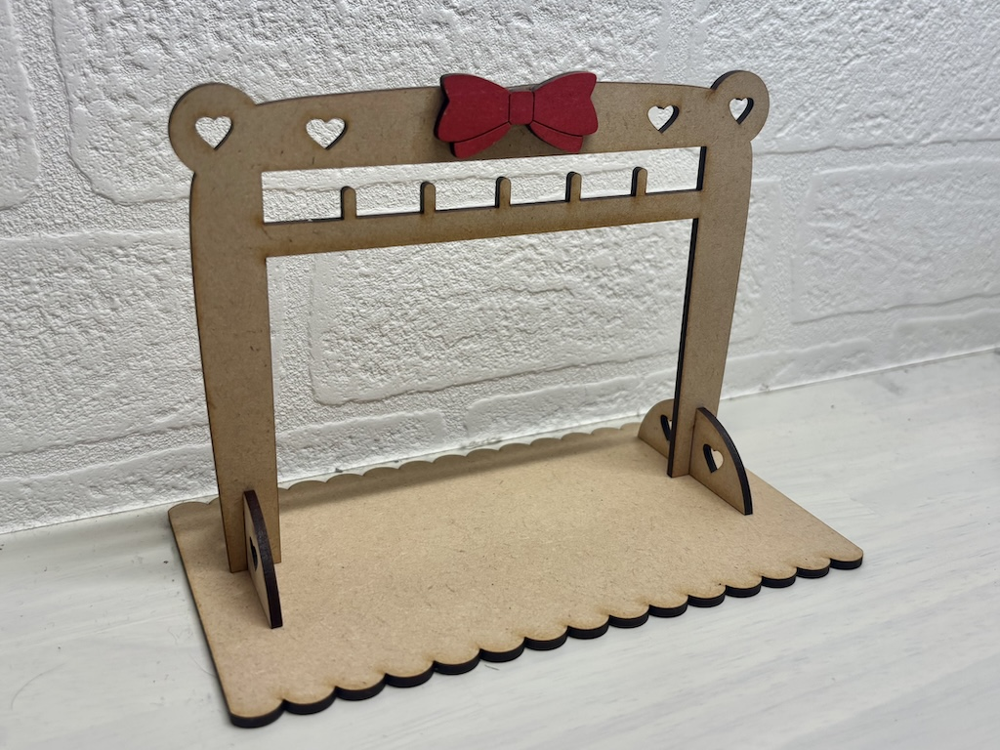
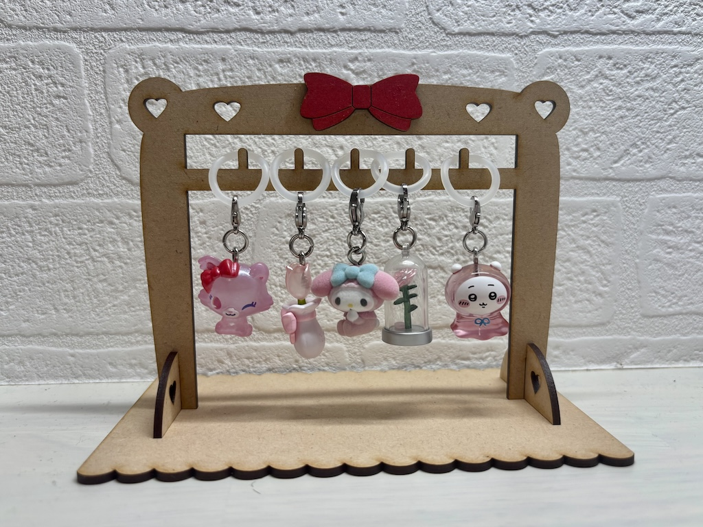
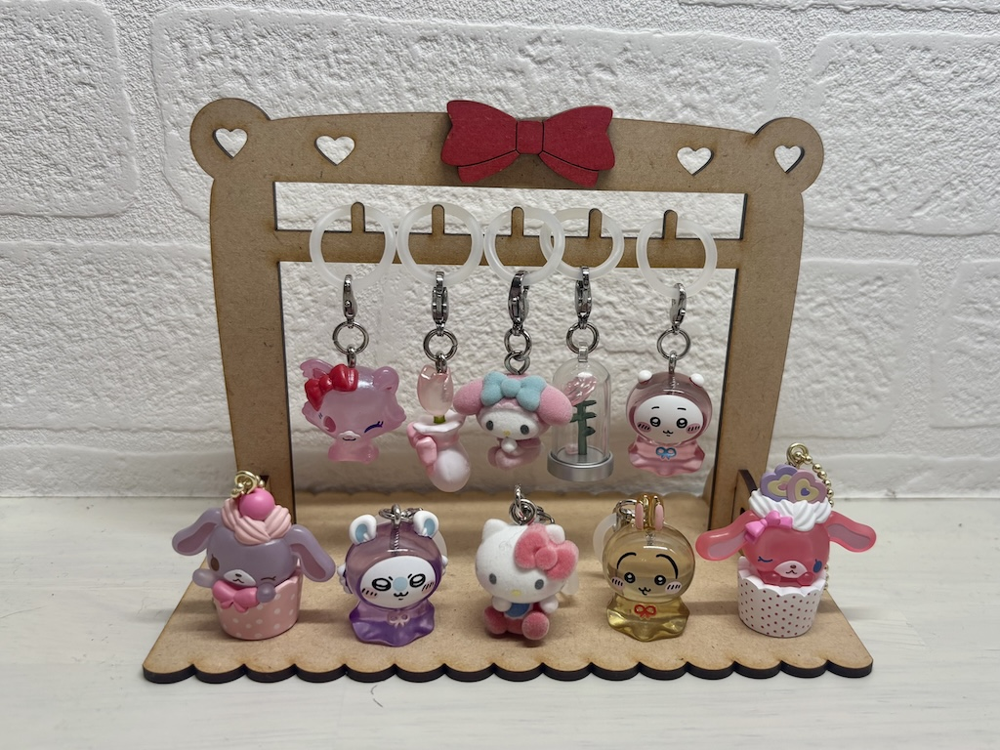

めじるしアクセサリースタンド
作品について
私はガチャガチャなどで手に入れることができるめじるしアクセサリー（チャーム）を集めるのが好きで、
いくつか持ってはいるものの、せっかく可愛いチャームを集めたのに、ただ缶の箱に収納しておくだけで、
綺麗に飾ることができておらず、以前からどうしようかと悩んでいました。
そこで、今回の課題で可愛く飾って収納できるめじるしアクセサリースタンドを制作することにしました！
手書きイメージ
ただシンプルな見た目だと、既存の収納商品と代わり映えしないので、リボンの装飾やハート型のくり抜きを作るなど、
パッと見ただけで魅了され、心が動かされるデザインになるように工夫しました。
完成画像



制作プロセス
フレームのような形にしたいので、本体と支えになる台座の部分を分けて、組み立て式の構造になるように制作しました。
本体の脚に1.5mm、半円型の台座に0.5mmの長さにし、幅は全て、2.45mmにしてピッタリとはめ込める溝に設計しました。
また半円型の脚の横幅の直径は50mmにして、スタンドがしっかりと自立して立つように設計しました。
ここの設計が上手くいかないと、スタンドを立たせることができないので、特に注意して長さの調整をしました。
チャームの輪っかを引っ掛ける突起の棒は縦 約5mm、横3mmに設計しました。
また、棒を置く間隔も全てのチャームがしっかりかかるように調節しました。
リボンは本体と別でパーツを作り、後から接着剤（木工用ボンド）でくっつけました。
色を塗ったらアクセントになって可愛いと思ったのでピンク色のマッキーで色塗りをしました。
見栄えが良くなるように波型の土台も製作しました。